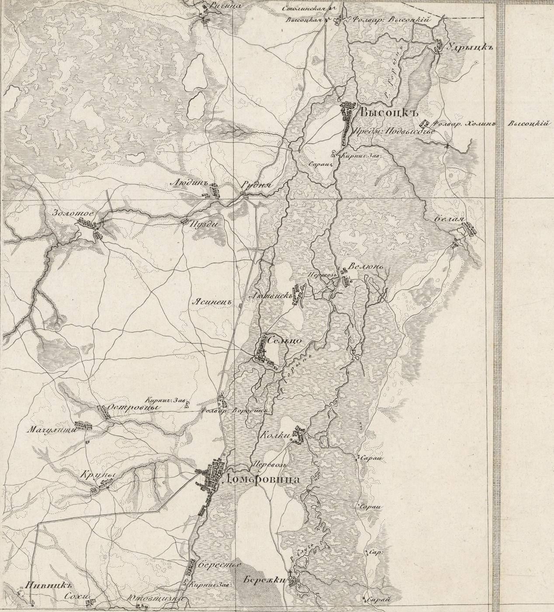

Першоджерела · 1642 — 1938
Господарські описи маєтку, судові книги, мапи, військові реєстри та списки мешканців Дубровиці — оцифровані, розшифровані й перекладені українською.
На фотоСумаріуш маєтку Дубровиця, грудень 1642 року
Документи за століттями
Кожен документ має скани оригіналу, а більшість — ще й повну транскрипцію, переклад українською, глосарій старих слів і пояснення історичного контексту.
Дубровицький маєток у Речі Посполитій: господарство напередодні Хмельниччини, спустошення війною та судові скарги до Пінського гродського суду.


Кінець Речі Посполитої і перші десятиліття у складі Волинської губернії: докладні описи міста, сіл, власників і мешканців.


Метричні книги парафій Дубровиці — записи про народження, шлюби й смерті.
Війни, мобілізації та міжвоєнна Польща: іменні реєстри, за якими можна знайти своїх предків.


Постаті
Люди, чиї імена стоять у «Економічних примітках» 1798 року, — їхні біографії, герби й володіння на мапі атласу.

Мальтійський командор, посол на Великий сейм. З 1771 року — власник Дубровиці й двох десятків навколишніх сіл.
Біографія
Несвізький і олицький ординат, офіцер гвардії Наполеона. Власник шести сіл над Горинню та Случчю.
БіографіяОберіть рік — побачите доступні метричні книги та скани
Опубліковані дослідження, збірки документів, мемуари та літературні роботи, присвячені історії міста